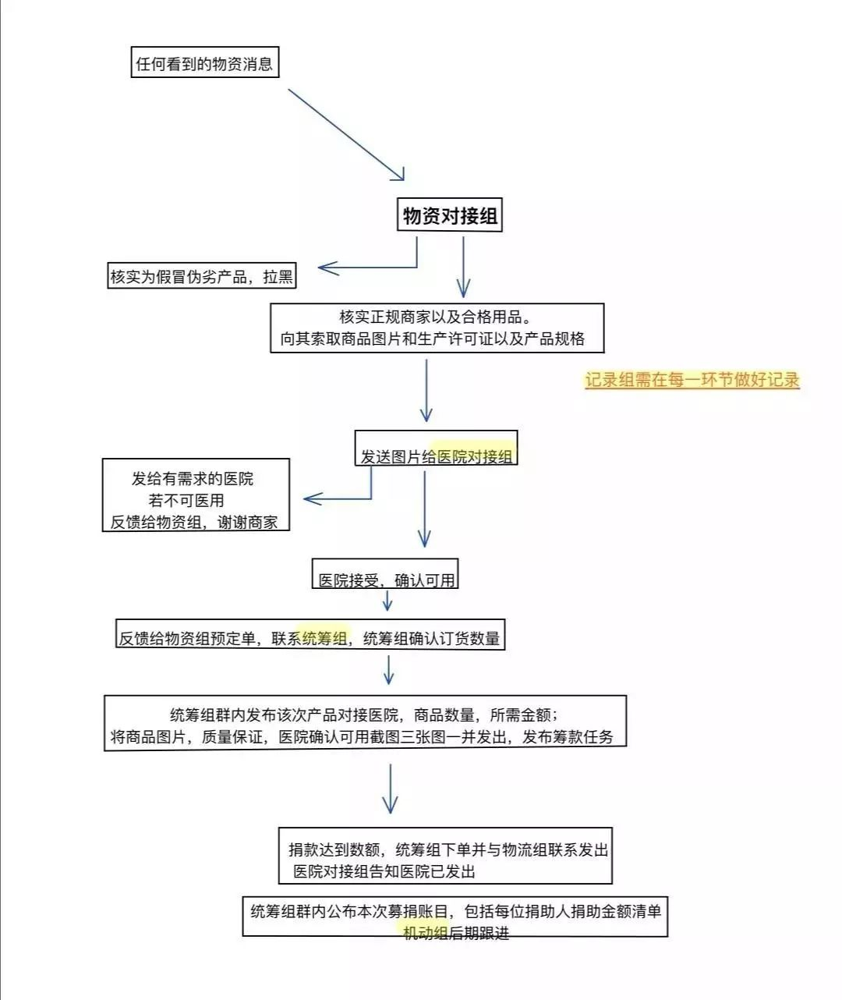
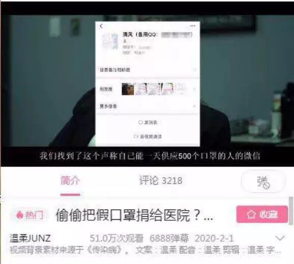
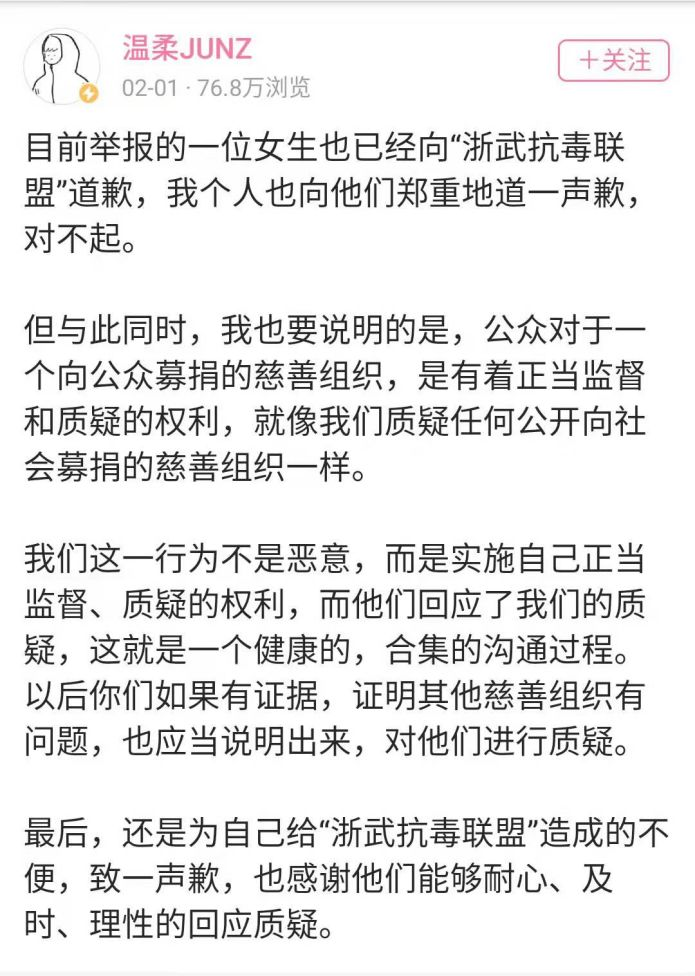
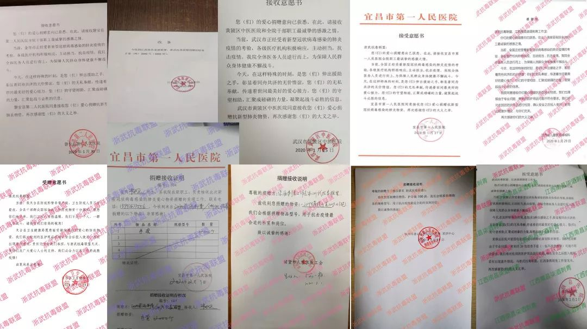
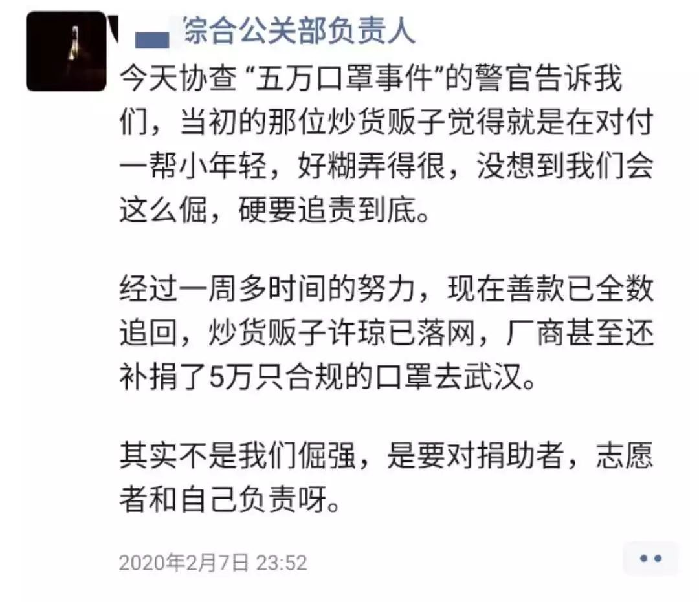

湖北物资频频告急，民间捐赠的激情与困境
原文链接 备份链接 向风暴眼输送防护物资并非易事武汉市中心医院医生发布微博求助，希望社会各界捐物资。图源：微博截图 2月12日晚，武汉中心医院的一位医生在微博发出求助。 这位身穿防护服的医生对镜头说，医用N95没有了，只能戴工业口罩，医 …

参与物资捐赠工作的年轻志愿者，很多也是第一次卷入互联网的风波里。
文 | 吴敏霞 余晓璐 编辑 | 沈小山
疫情当前，海内外学生志愿者也在行动。网络质疑、商家欺骗，打通物资渠道的工作在互联网暴露大量信息。这些参与物资捐赠工作的年轻志愿者，很多也是第一次卷入互联网的风波里。
一个人就是一座桥梁
丁丁是德国海德堡大学的在读学生。和很多朋友一样，她在疫情最开始时就投身物资捐赠志愿工作，希望为祖国做些事。
于是她参加了母校华南师范大学附属中学校友会，同时也为其他物资捐赠者传递资讯，而掌握多门外语也使她能够审核多国物资。资讯传递就像把自己变成一座桥梁，丁丁说“我觉得自己成了人型资讯中转站”。
1月31日丁丁了解到阿里巴巴公益开通了菜鸟免费向武汉运输救援物资的绿色通道，于是她很快和阿里巴巴联络人联系，通宵问清楚最新流程。两天后阿里巴巴的官方公告广泛传播开，丁丁便直接将自己整理好的详细流程发给需要的团队，节省更多时间。

阿里巴巴公益微博截图
志愿工作中的困难并不少，比如前期网传的物资标准有含糊之处，无法完全确认国标所对应的欧标；物资、运输、通关、医院的通道分别掌握在不同人手里，打通整条渠道需要花很长时间；而且她发现一些团队由于缺乏管理经验，工作效率较低。
但当丁丁参与对接的第一批物资到中山医院时，她感觉一切都值得。“那一刻我真想哭出来，实在太难了，为了几箱口罩，大家不知道辛苦忙碌了多少日子。”丁丁说。

丁丁参与对接的第一批物资到前线时（受访者供图）
在和伙伴的共同努力下，如今她所在的华南师范大学附属中学校友会募集了60多万元捐款，将4万件隔离服、100个N95口罩、720个护目镜送到前线。此外她还参与了十余个组织的对接，协助百余人。现在她成为校友会的欧洲联络员，继续跟进新一批的物资。
二十岁的他们遭百万up主质疑
然而，当年轻的志愿者迅速组建起队伍参与志愿工作时，网络上的质疑也悄然起伏。浙武抗毒联盟就经历了一次质疑风波。
浙武抗毒联盟由浙江音乐学院和武汉音乐学院的二十多位学生发起，大多是95后和00后，分为统筹（财务）、物资对接、医院对接、物流对接、机动组、记录组等六个组。

工作流程图（由受访者供图）
截至目前共募捐到了178597元善款，购买了12000个口罩、10000个手套、4241件防护服、500个护目镜、400个防护面罩，帮助武汉中西结合医院、武汉协和医院、武汉中心医院等30家医院解决了燃眉之急。浙武抗毒联盟是丁丁最早对接的组织。“他们行动效率特别高，证据也保存得很好。”丁丁说。
负责医院对接和宣传工作的鲍小露说，2月1日，当大家正高兴地观看萧山市中医院发过来的感谢视频时，群里突然出现了一个视频链接《偷偷把假口罩捐给医院？这个’慈善组织’背后的真面目”》。
她打开后才发现作者是一位名为“温柔JUNZ”的哔哩哔哩网站视频博主，质疑他们存在货源造假、护目镜价格虚高、账目信息未公开等问题，并直接指控浙武抗毒联盟“为了牟利，以次充好、以假充真”。该视频在被删除前，累计获得超过54万次播放量。

该视频博主发的第一个视频截图（现已删除）
看着视频，鲍小露说：“第一感受就是气愤，做了这么多事居然还要背负莫须有的骂名，很多人在评论区指责、谩骂，这是第一次真心感受到网暴的可怕。”同时表示，该视频博主在发布前并未与任何一位成员取得联系。于是她在个人微信公众平台发布文章《我们只是二十岁的我们，把能做的都做了，却……》，说明了她和伙伴们经历的这次质疑风波。
质疑视频出来后，浙武抗毒联盟成员立即与该视频博主联系进行协商，提供聊天记录、图片等证据，回应质疑。经过协商后该视频博主同意删除视频并道歉，并于次日发布第二个视频《我为什么删除“浙武抗毒联盟”的视频？》。

2月1日“温柔JUNZ”文字动态截图
鲍小露说：“我们欢迎大家质疑，也欢迎大家正当监督。但质疑的人应先直接找当事人，如果当事人拿不出相关证据，可以在深入调查、确认证据的基础上以更合适的方式提出质疑。”
“我觉得我们做的最好的地方在于请医院提供了接收意愿书，否则遇到这样的问题，我们的处境会更艰难。”鲍小露说。经验不足的志愿者们学习到原来工作还有很多可以改进的地方：比如应该把统筹组和财务组分开，做好记录及时公布，另外还可以请第三方机构监督执行等。目前浙武抗毒联盟已经整理了物资捐赠信息并公开。

部分接受意愿书（由受访者提供）
捐赠物资信息（受访者提供）
吃一堑、长一智的志愿者们
如很多留学生志愿捐赠组织一样，武汉加油x北美留学生组也遇到了很多困难。兰萌说，组内一些小伙伴遭到个人信息的泄露、恶意诽谤，甚至还有人被对接者性骚扰等。
兰萌是武汉加油x北美留学生组综合公关部负责人。她介绍说，在1月23日即武汉封城第一日，看到各医院的求助信息，武汉加油x北美留学生组短短几小时内迅速组建团队，决定通过筹款、采购的方式，链接国内外民间医疗防护耗材物资，共同支援武汉及周边医院，并建立起交通部、信息与合作部、采购部、医院部等部门，财务与人事独立支持。现在已发展到2000多名志愿者。
有一天晚上，遇到一系列事情后大家情绪都很低落，但在紧急召开的电话会议上，兰萌和伙伴们听到总负责人这样说，“作为负责人你们不能崩，必须好好站着，为组员们遮风挡雨。”于是他们很快调整好了自身情绪，安抚组员们。“我们都是平均年龄十八岁的学生，经过这次事件，每个人都好像一夜之间长大了。”综合资源部部长李文杰说。
可是在最初组织捐赠时，兰萌和伙伴们也曾遭遇售卖“三无”口罩的无良商家，导致运达前线的五万只口罩不符合医用标准。兰萌表示，“五万口罩事件”还在继续调查中，目前取得了一定的进展。在2月3日时已在执法机关协助下将27.5万善款全部追回，同时厂家补发了5万只合格的口罩到武汉，之后炒货者也落入法网。

武汉加油x北美留学生组通告微博截图
“今天协查“五万口罩事件”的警官告诉我们，当初的那位炒货贩子觉得就是在对付一帮小年轻，好糊弄得很，没想到我们会这么倔，硬要追责到底。其实不是我们倔强，是要对捐助者、志愿者和自己负责呀。”兰萌在朋友圈中写到。

兰萌朋友圈截图（受访者提供）
舆论朝向如天气，网友们看到年轻志愿者的工作成果时喊“少年强则中国强”，当四面八方的争议出来，有人就质疑这群年轻人“不靠谱”。正当质疑是为更好地监督，但无良商家的欺骗和不明真相网民的攻击，都没有让志愿者们怀疑自己努力付出的意义。
而来之不易的捐赠成果是志愿者们最大的安慰，武汉加油x北美留学生组目前募集到931193.41元人民币，已运送N95口罩50600个、医用外科口罩14000个、医用手套35400双、消毒液120箱、护目镜200个等，N95口罩34000个也即将到达武汉。

与司机志愿者联系截图（受访者提供）
即便遭遇质疑、经历高强度的工作，志愿者们感到温暖的事情还有很多。一次武汉加油x北美留学生组志愿者们需要把1000件隔离衣从仙桃运到荆州，当时很多志愿司机由于多日奔波身体吃不消，还有人出现了疑似感染的症状，甚至确诊，志愿者们陷入了找不到司机的困境。
当他们打算放弃时，一位90后女孩承担起了司机的工作，她拒绝用紧缺的隔离衣，披着一次性桌布驶向了130公里外的荆州。
*文中部分采访对象为化名
来源 | 南都周刊
END
欢迎分享到朋友圈，如想取得授权请邮件：newmedia@nbweekly.com。如果想找到小南，可以在后台回复「小南」试试看哦~

原文链接 备份链接 向风暴眼输送防护物资并非易事武汉市中心医院医生发布微博求助，希望社会各界捐物资。图源：微博截图 2月12日晚，武汉中心医院的一位医生在微博发出求助。 这位身穿防护服的医生对镜头说，医用N95没有了，只能戴工业口罩，医 …
原文链接 备份链接 个体救援，也是新冠肺炎疫情的重要救援力量，从农民工到退伍军人，他们以杯水尝试灭熄瘟疫之火，很多人甚至都没有留下姓名。大年初五，私家车主雷鹏驾车16小时急行1100公里，直抵武汉，成为了一名救援志愿者。 这是真实故事计 …
原文链接 备份链接 数据来源：腾讯新冠肺炎疫情实时追踪 截至2月3日早上7时， 全国新冠肺炎确诊个案16615例， 武汉确诊个案5142例。 根据1月31日湖北省疫情新闻发布会， 截至30日24时， 武汉地区共有6万余名医务工作者参与救 …
原文链接 备份链接 新冠肺炎疫情的医疗物资告急，各地纷纷发出求助信息。与此同时，海外华人行动起来在异国采购紧缺物资，却苦于没有渠道运抵国内抗疫一线。一条绿色通道出现，为救援物资架起跨洋的生命运输线。 故事时间：2020年 故事地点：海 …
原文链接 备份链接 *************▲*************贴着“岂曰无衣，与子同裳”的物资送达武汉当地医院。（日本湖北商会供图/图） 全文共3277字，阅读大约需要8分钟。 外交部发言人华春莹在例行记者会上说，病毒无情 …